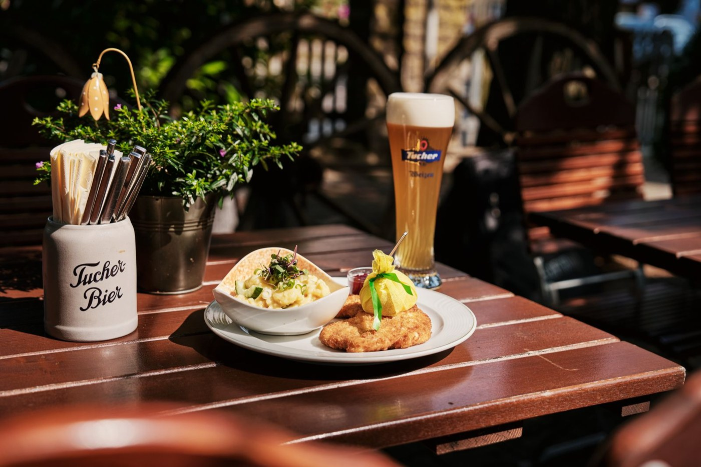
| 営業時間 | レストラン 11:00〜14:00、18:00〜23:00（厨房は11:00〜14:00、18:00〜21:00）／ビアガーデン（季節営業）11:00〜23:00 |
|---|---|
| 定休日 | 定休日の記載なし |
| 住所 | Vorm Würzburger Tor 10, 91541 Rothenburg ob der Tauber |
| 予約 | 可（公式サイトのテーブル予約・電話） — ☎ +49 9861 95710 ／ 公式サイト |
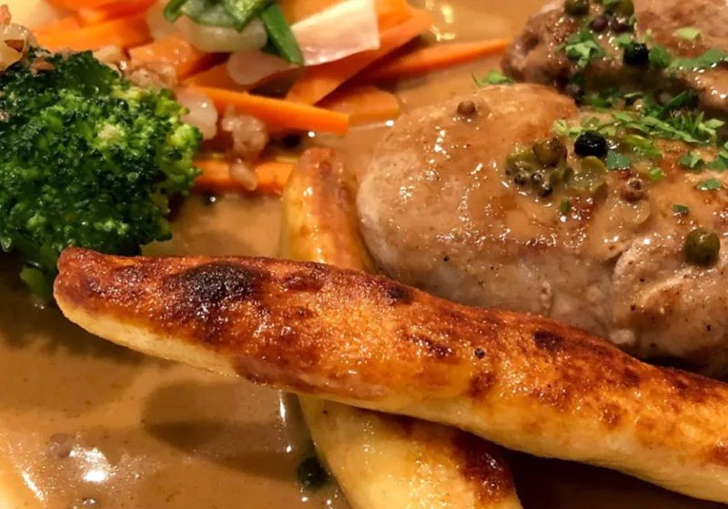
| 営業時間 | 記載なし（未確認。予約電話で確認） |
|---|---|
| 定休日 | 水曜・木曜 |
| 住所 | Georgengasse 11-13, 91541 Rothenburg ob der Tauber |
| 予約 | 推奨（電話 09861 9790） — ☎ +49 9861 9790 ／ 公式サイト |
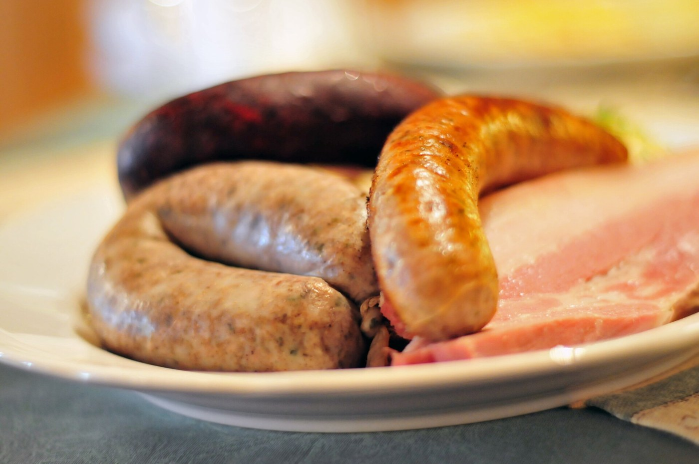
| 営業時間 | 4月〜12月 毎日 11:30〜21:00（温かい料理） |
|---|---|
| 定休日 | クリスマスは休業。1〜3月の営業は未確認 |
| 住所 | Schrannenplatz 6, 91541 Rothenburg ob der Tauber |
| 予約 | 可（公式サイトのテーブル予約・電話） — ☎ +49 9861 95500 ／ 公式サイト |
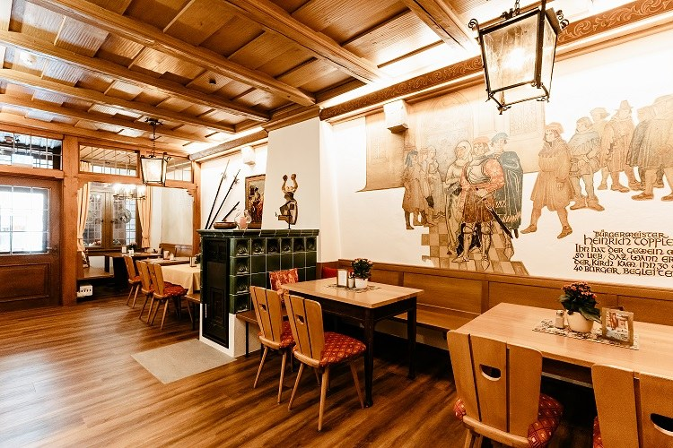
| 営業時間 | 厨房 12:00〜20:00 |
|---|---|
| 定休日 | 火曜・水曜 |
| 住所 | Obere Schmiedgasse 5, 91541 Rothenburg ob der Tauber |
| 予約 | 可（団体は要相談。クリスマス市の期間は予約不可） — ☎ +49 9861 2281 ／ 公式サイト |
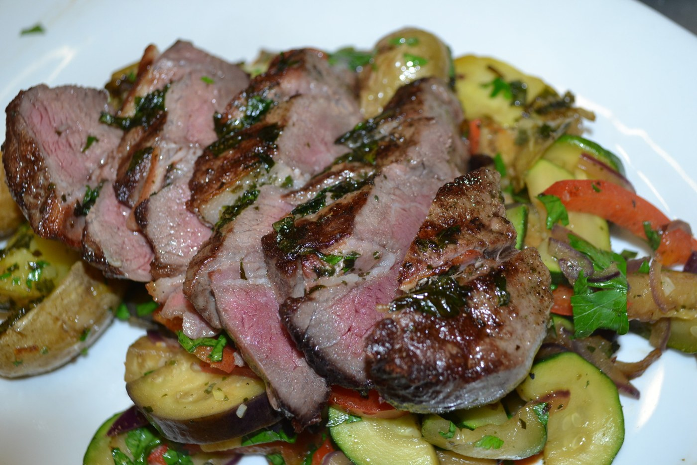
| 営業時間 | 水〜金 17:30〜（入替 17:30〜19:15／19:30〜、厨房20:00まで）、土日 11:30〜13:30・17:30〜 |
|---|---|
| 定休日 | 月曜・火曜 |
| 住所 | Alter Keller 8, 91541 Rothenburg ob der Tauber |
| 予約 | 推奨（電話のみ。メールには返信しない。20人以上の団体のみメール可） — ☎ +49 9861 2268 ／ 公式サイト |
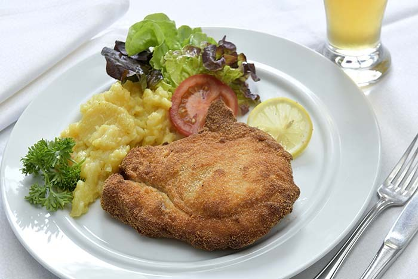
| 営業時間 | 水〜月 9:00〜（厨房の通し営業は月・水・木〜18:30、金・土〜20:00、日〜17:00） |
|---|---|
| 定休日 | 火曜（2026年11月2日〜12日は休業） |
| 住所 | Vorm Würzburger Tor 11, 91541 Rothenburg ob der Tauber |
| 予約 | 可（電話・メール info@hotel-bezold.de） — ☎ +49 9861 94760 ／ 公式サイト |
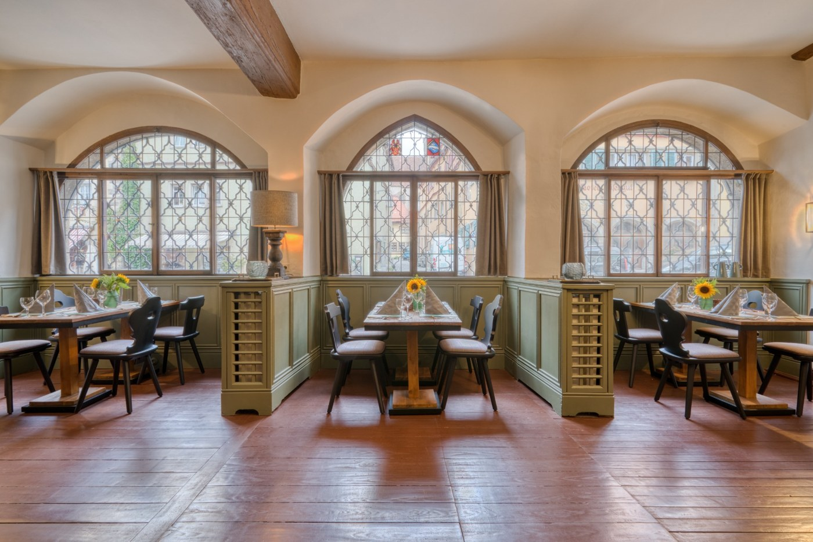
| 営業時間 | 毎日 12:00〜17:30（昼メニュー）、17:30〜21:00（夜メニュー。18:00と20:00の2回入替） |
|---|---|
| 定休日 | なし（毎日営業） |
| 住所 | Herrngasse 3-7, 91541 Rothenburg ob der Tauber |
| 予約 | 推奨（夜は入替制のため。電話・メール hotel@hotel-eisenhut.de） — ☎ +49 9861 7050 ／ 公式サイト |
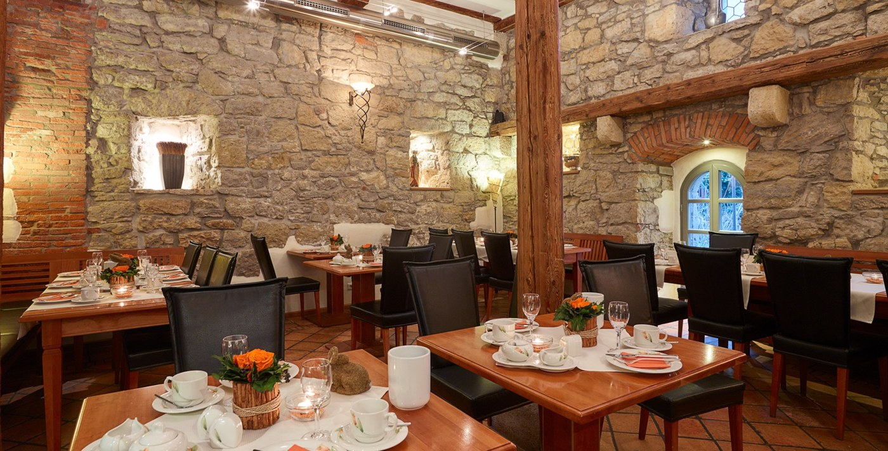
| 営業時間 | 公式サイトに記載なし（未確認） |
|---|---|
| 定休日 | 公式サイトに記載なし（未確認） |
| 住所 | Heringsbronnengässchen 5, 91541 Rothenburg ob der Tauber |
| 予約 | 推奨（電話 +49 9861 938890） — ☎ +49 9861 938890 ／ 公式サイト |
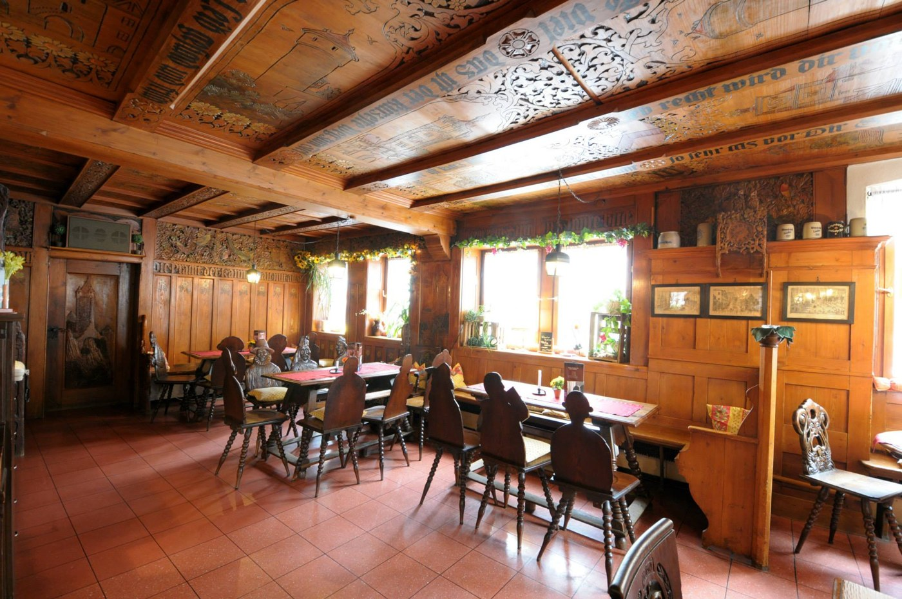
| 営業時間 | 水〜金 17:00〜23:00、土日 12:00〜23:00 |
|---|---|
| 定休日 | 月曜・火曜 |
| 住所 | Herrngasse 31, 91541 Rothenburg ob der Tauber |
| 予約 | 可（電話。予約の扱いは未確認） — ☎ +49 9861 976182 ／ 公式サイト |
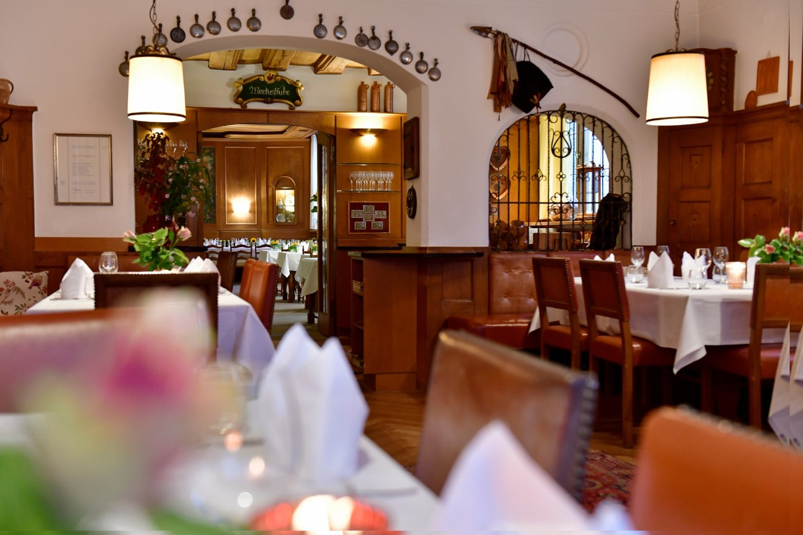
| 営業時間 | 公式サイトに記載なし（未確認。夕食は17:30までの予約を推奨） |
|---|---|
| 定休日 | 宿泊の状況により変動（公式サイトのよくある質問による） |
| 住所 | Rödergasse 1, 91541 Rothenburg ob der Tauber |
| 予約 | 推奨（17:30までに電話で） — ☎ +49 9861 94280 ／ 公式サイト |
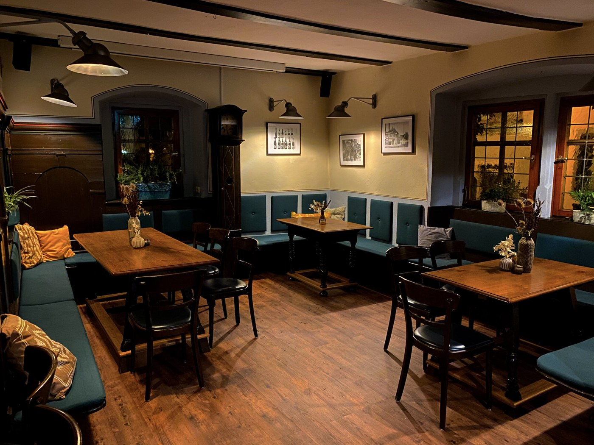
| 営業時間 | 公式サイト（冬季）: 火〜木 18:00〜22:30／金 18:00〜翌1:30／土 12:00〜翌1:00／日 12:00〜21:30。観光局サイト: 火〜木 17:00〜22:30／金 16:00〜翌1:00／土 12:00〜翌1:00／日 12:00〜21:30 |
|---|---|
| 定休日 | 月曜 |
| 住所 | Spitalgasse 1, 91541 Rothenburg ob der Tauber |
| 予約 | 可（電話・Facebook・Instagram で受付） — ☎ +49 9861 9369380 ／ 公式サイト |
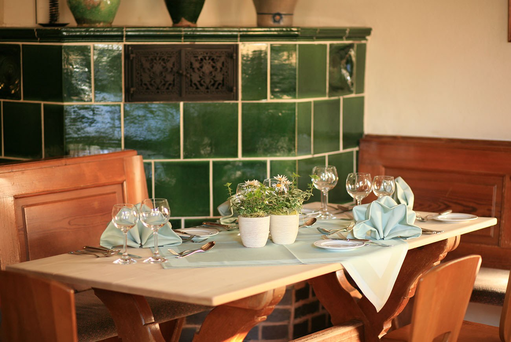
| 営業時間 | 料理の提供 月〜土 11:00〜21:00／日 11:00〜14:00 |
|---|---|
| 定休日 | 記載なし（日曜は夜の営業なし） |
| 住所 | Plönlein 1, 91541 Rothenburg ob der Tauber |
| 予約 | 推奨（電話。ワイン試飲は8名から要予約） — ☎ +49 9861 958990 ／ 公式サイト |
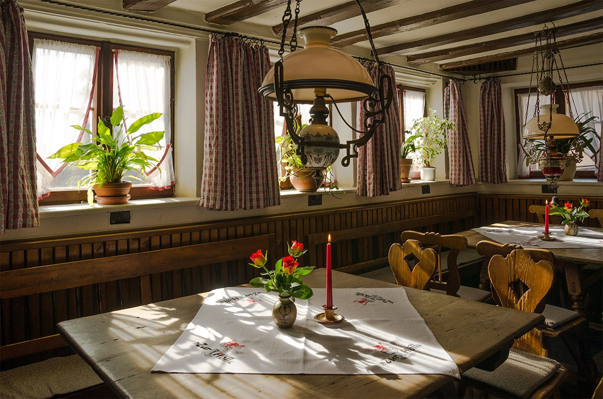
| 営業時間 | 月〜土 17:00〜 |
|---|---|
| 定休日 | 日曜 |
| 住所 | Burggasse 8, 91541 Rothenburg ob der Tauber |
| 予約 | 推奨（電話またはメール reservation@zurhoell.com。オンライン予約は返信で確定、当日分は電話のみ） — ☎ +49 9861 4229 ／ 公式サイト |
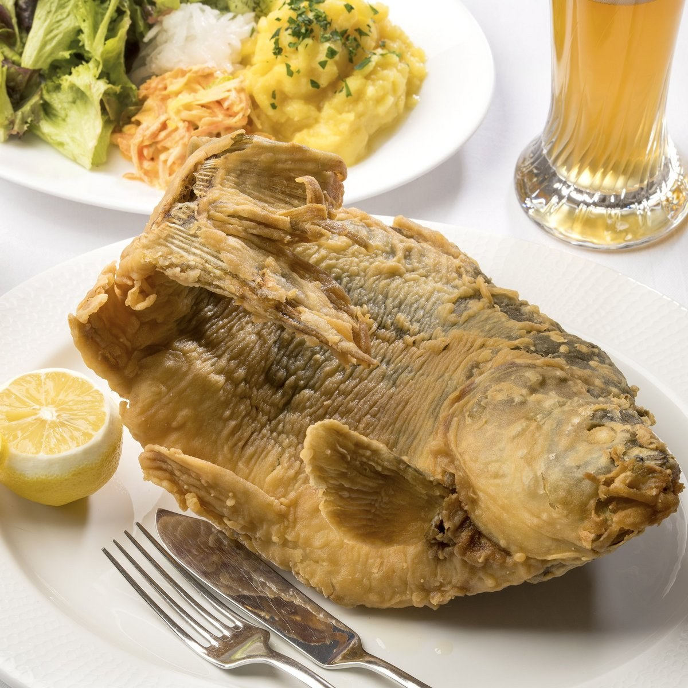
| 営業時間 | 毎日 11:30〜23:00（温かい料理は11:30〜21:00）。ビアガーデンは晴れた日のみ |
|---|---|
| 定休日 | 無休 |
| 住所 | Kirchplatz 8, 91541 Rothenburg ob der Tauber |
| 予約 | 可（電話 +49 9861 970-506。10名以上はメール hotel@reichskuechenmeister.de） — 公式サイト |
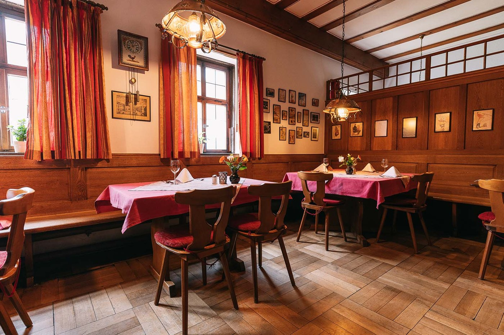
| 営業時間 | 火・水・金・土・日 11:30〜14:00／18:00〜21:00 |
|---|---|
| 定休日 | 月曜・木曜 |
| 住所 | Kapellenplatz 4, 91541 Rothenburg ob der Tauber |
| 予約 | 可（電話・メール info@gasthof-butz.de） — ☎ +49 9861 2201 ／ 公式サイト |
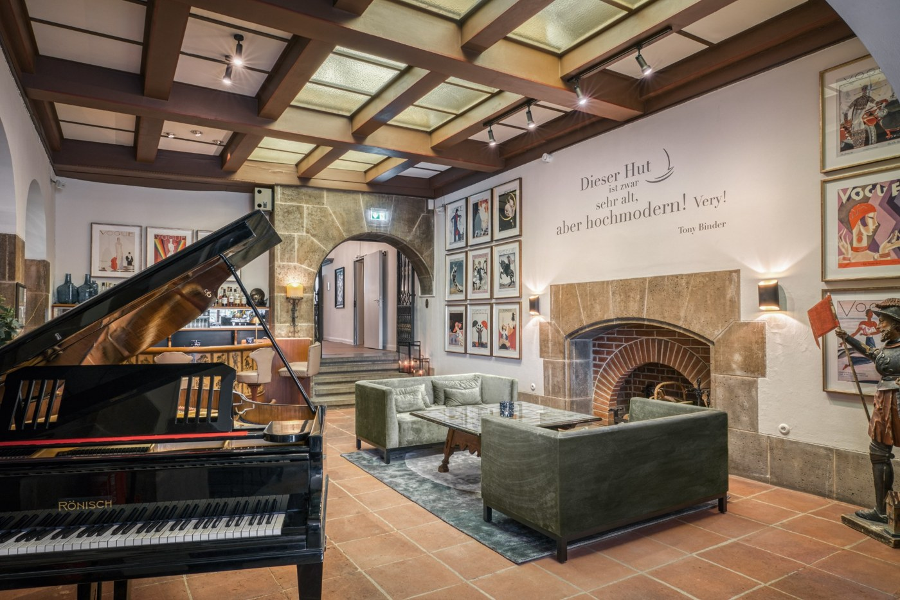
| 営業時間 | 未掲載（ワイン酒場は午後〜夜。ビアガーデンは夏季のみで2026年は冬季休業に入った） |
|---|---|
| 定休日 | 未掲載 |
| 住所 | Herrngasse 3-5/7, 91541 Rothenburg ob der Tauber |
| 予約 | 可（電話 +49 9861 8704930 またはメール） — 公式サイト |
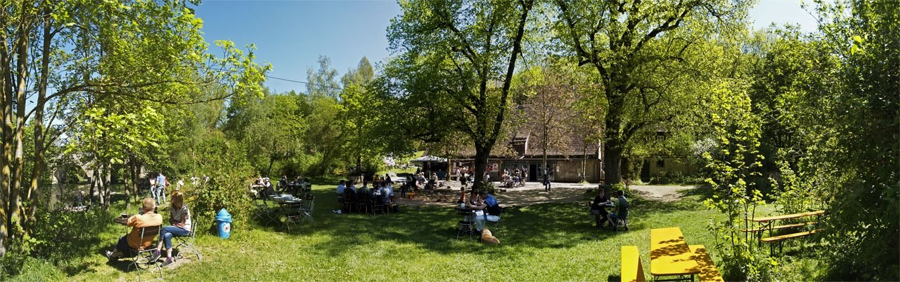
| 営業時間 | 春の初め〜10月初め：水〜金 14:00〜22:00／土日祝 11:00〜22:00（観光局サイトは土日10:00からと記載）。天候で変わるため公式サイトの告知を確認 |
|---|---|
| 定休日 | 月曜・火曜（祝日は営業）。10月初め〜春は冬季休業 |
| 住所 | Kurze Steige 7b, 91541 Rothenburg ob der Tauber |
| 予約 | 不要（予約についての記載なし） — ☎ +49 9861 5909 ／ 公式サイト |
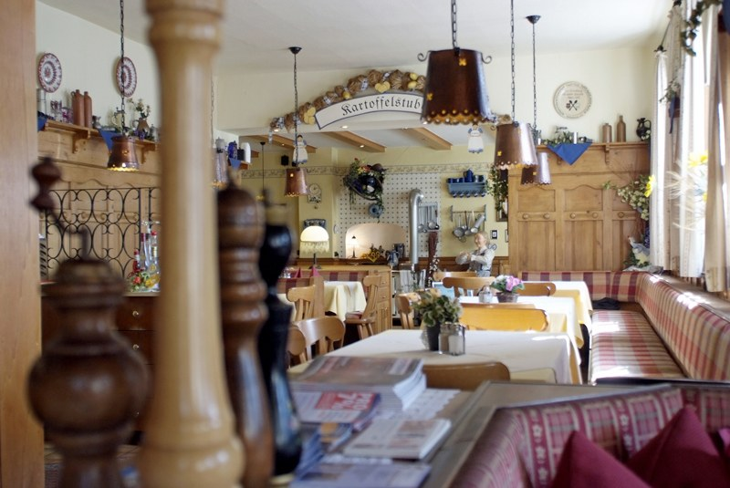
| 営業時間 | 料理: 水〜金 17:30〜21:00／土 11:30〜14:00・17:30〜21:00／日 11:30〜14:00・17:30〜20:30。ビアガーデンは5〜9月の晴天時 17:30から |
|---|---|
| 定休日 | 月曜・火曜 |
| 住所 | Ansbacher Straße 7, 91541 Rothenburg ob der Tauber |
| 予約 | 可（電話） — ☎ +49 9861 2022 ／ 公式サイト |
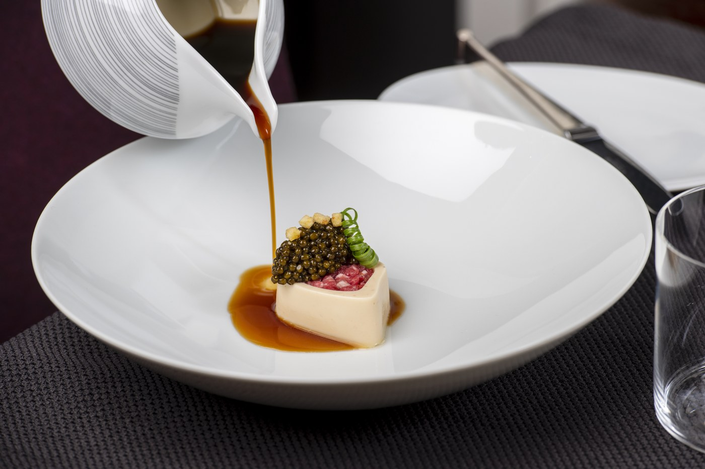
| 営業時間 | 火〜土 18:00〜22:00（ディナーのみ） |
|---|---|
| 定休日 | 日・月。ほか2026年11月13日、冬期休業2027年1月3日〜2月22日 |
| 住所 | Vorm Würzburger Tor 7, 91541 Rothenburg ob der Tauber |
| 予約 | 推奨（公式サイトの予約ボタンまたは電話 +49 9861 9454-0） — ☎ +49 9861 9454-0 ／ 公式サイト |
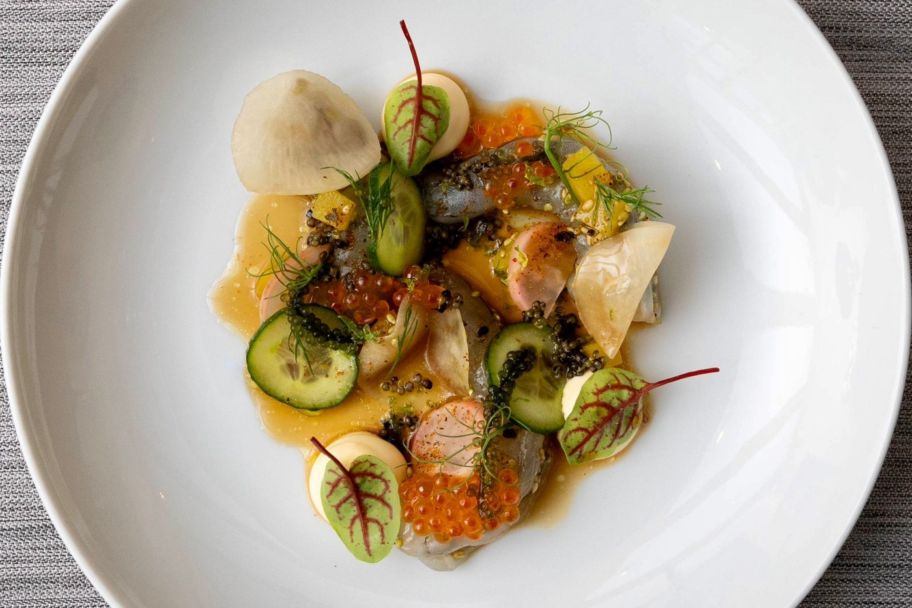
| 営業時間 | 月・木・金・土・日 18:00〜21:30 |
|---|---|
| 定休日 | 火・水 |
| 住所 | Herrngasse 20, 91541 Rothenburg ob der Tauber |
| 予約 | 要（コース1本のため。公式サイトの予約、メール info@restaurantherr.de、電話。7名以上はメールのみ） — ☎ +49 1523 1601819 ／ 公式サイト |
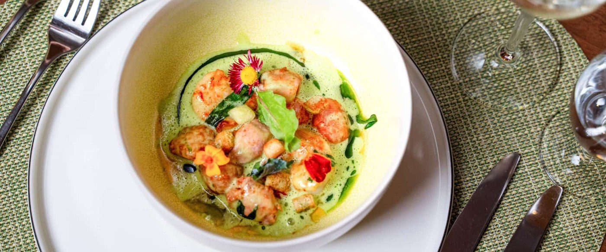
| 営業時間 | 火〜土 17:30〜22:00（ホテルの朝食は別：月〜土7:30〜11:15、日8:00〜11:15） |
|---|---|
| 定休日 | 日・月 |
| 住所 | An der Hofstatt 3, 91541 Rothenburg ob der Tauber |
| 予約 | 推奨（週末・休暇期に。公式サイトの予約、OpenTable、電話） — ☎ +49 9861 975-0 ／ 公式サイト |
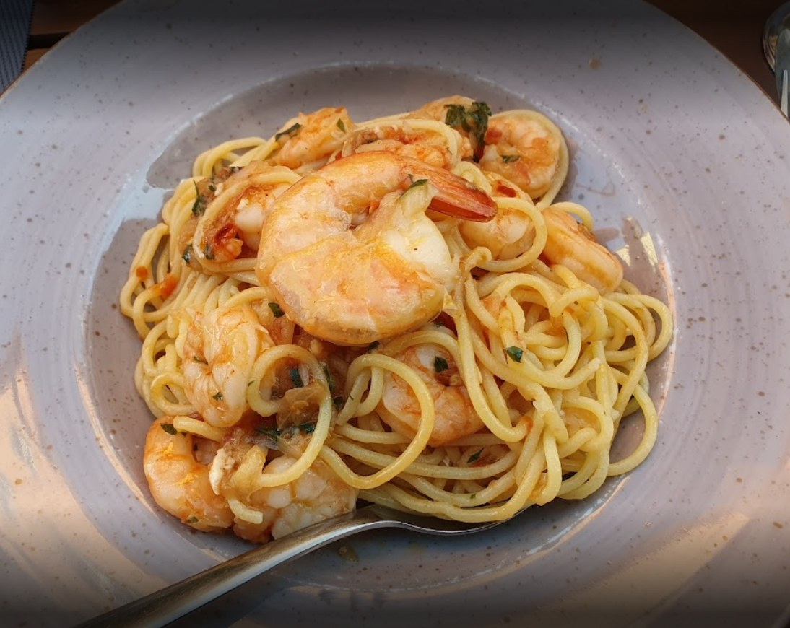
| 営業時間 | 火〜日 11:30〜14:00／17:00〜21:00 |
|---|---|
| 定休日 | 月曜 |
| 住所 | Galgengasse 13, 91541 Rothenburg ob der Tauber |
| 予約 | 可（電話。持ち帰りの注文も電話） — ☎ +49 9861 8755087 ／ 公式サイト |
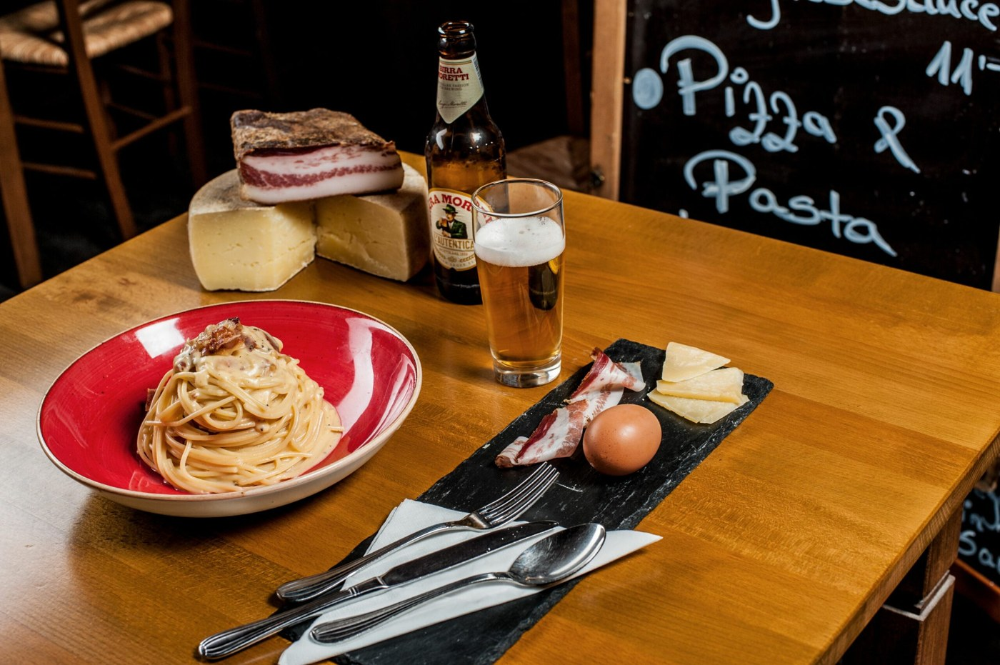
| 営業時間 | 水〜月 11:30〜21:30 |
|---|---|
| 定休日 | 火曜 |
| 住所 | Herrngasse 8, 91541 Rothenburg ob der Tauber |
| 予約 | 推奨（電話） — ☎ +49 9861 2225 ／ 公式サイト |
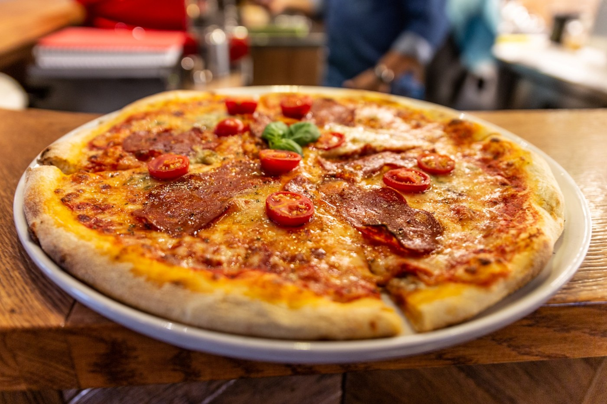
| 営業時間 | 月・火 17:00〜21:00／金・土 17:00〜22:00／日 17:00〜21:00 |
|---|---|
| 定休日 | 水曜・木曜 |
| 住所 | Georgengasse 2, 91541 Rothenburg ob der Tauber |
| 予約 | 可（公式サイトの「Kontakt & Reservieren」・電話） — ☎ +49 9861 9764044 ／ 公式サイト |
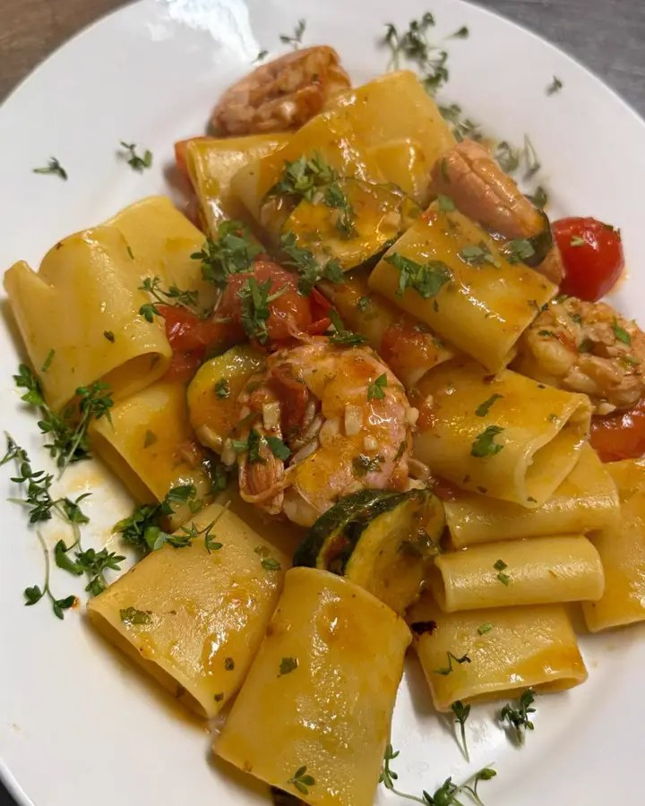
| 営業時間 | 金・土 16:00〜21:00／日 12:00〜14:30・16:30〜20:00（構造化データ側は火・水・金・土・日に昼12:00〜14:30、夜16:30〜21:00〈日曜は20:00まで〉と記載） |
|---|---|
| 定休日 | 月〜木曜（表示データ。構造化データ側は月・木曜） |
| 住所 | Am Bauerngraben 1, 91541 Rothenburg ob der Tauber |
| 予約 | 可（公式サイトの席の問い合わせフォーム・電話） — ☎ +49 9861 9361505 ／ 公式サイト |
| 営業時間 | 火〜日 11:30〜22:00 |
|---|---|
| 定休日 | 月曜 |
| 住所 | Rödergasse 22, 91541 Rothenburg ob der Tauber |
| 予約 | 可（公式サイトの予約フォーム・電話） — ☎ +49 9861 9367459 ／ 公式サイト |
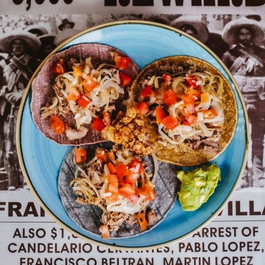
| 営業時間 | 12:00〜22:00（料理は12:00〜21:00） |
|---|---|
| 定休日 | 11月と1月〜4月初めは水曜定休（公式サイトの記載。それ以外の時期は記載なし） |
| 住所 | Obere Schmiedgasse 21, 91541 Rothenburg ob der Tauber |
| 予約 | 可（公式サイトの予約ページ・電話） — ☎ +49 9861 9740 ／ 公式サイト |
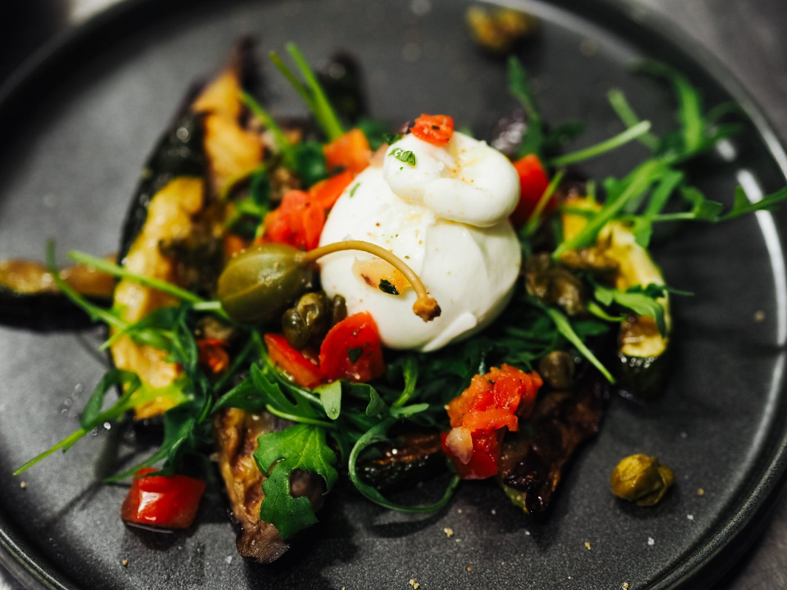
| 営業時間 | 火〜木 18:00〜22:30／金 18:00〜24:00／土 18:00〜翌1:00／日 17:00〜22:30 |
|---|---|
| 定休日 | 月曜 |
| 住所 | Schweinsdorfer Str. 25b, 91541 Rothenburg ob der Tauber |
| 予約 | 可（公式サイトのオンライン予約・電話） — ☎ +49 9861 9744699 ／ 公式サイト |
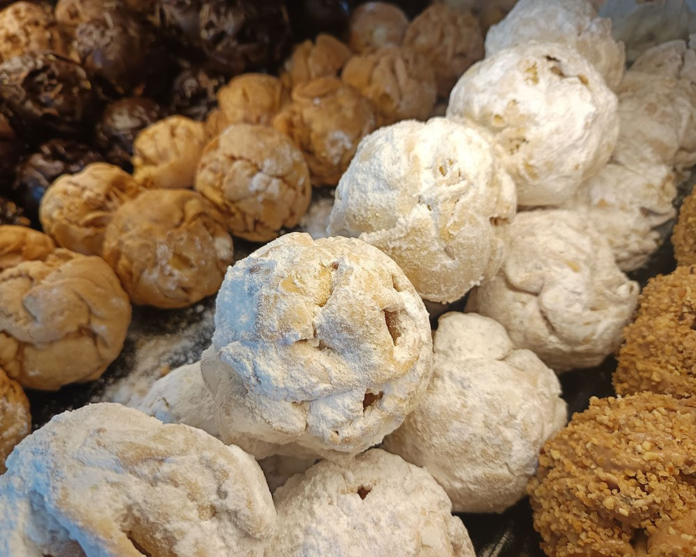
| 営業時間 | 月〜土 8:00〜17:30、日 10:30〜17:30（旧市街店） |
|---|---|
| 定休日 | なし（公式サイトに定休日の記載なし） |
| 住所 | Untere Schmiedgasse 1, 91541 Rothenburg ob der Tauber |
| 予約 | 不要（製造見学のみ電話で要予約。冬期はオンライン注文を休止） — ☎ +49 9861 6788 ／ 公式サイト |
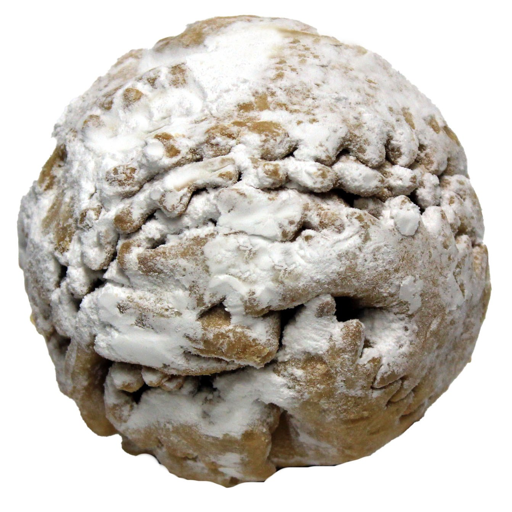
| 営業時間 | カフェ：毎日 9:00〜20:00／マルクト広場の売店：水〜土 11:00〜17:00、日 10:00〜18:00（いずれも2026年第42週の掲示。週ごとに更新される） |
|---|---|
| 定休日 | カフェ：なし／売店：月・火（2026年第42週の掲示） |
| 住所 | Obere Schmiedgasse 7, 91541 Rothenburg ob der Tauber（カフェ）／Am Markt 4（売店） |
| 予約 | 不要 — ☎ +49 9861 938563 ／ 公式サイト |
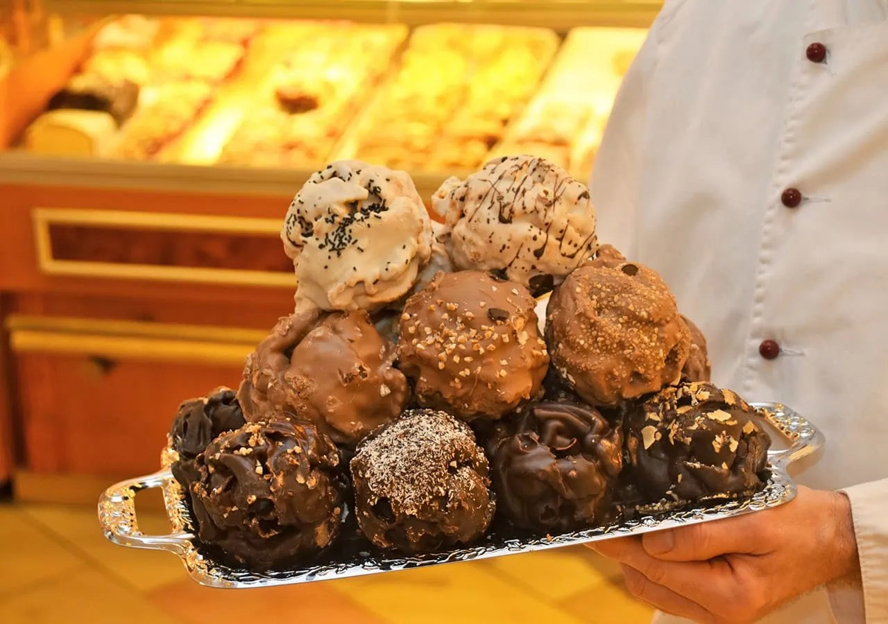
| 営業時間 | 未確認（Sellwerk：月〜土 6:00〜18:00・日 10:00〜18:00／Wanderlog：月〜土 8:00〜17:00・日 8:30〜18:00 と食い違う） |
|---|---|
| 定休日 | 未確認 |
| 住所 | Markt 8, 91541 Rothenburg ob der Tauber |
| 予約 | 不要 — ☎ +49 9861 7818 ／ 公式サイト |
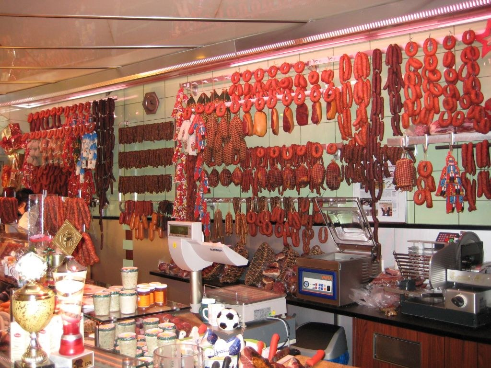
| 営業時間 | 月〜金 9:00〜17:00、土 8:00〜13:00（店舗ページ）／月〜金 7:30〜18:00、土 7:30〜14:00（2026年10月12〜24日のチラシ）＝公式内で食い違う |
|---|---|
| 定休日 | 日 |
| 住所 | Obere Schmiedgasse 18, 91541 Rothenburg ob der Tauber |
| 予約 | 不要 — ☎ +49 9861 3478 ／ 公式サイト |
| 営業時間 | 火〜金 10:00〜13:00・13:30〜18:00、土 10:00〜17:00、4〜12月の多くの日曜 11:00〜17:00（観光局ページは火〜土10:00〜18:00・日11:00〜17:00と記載） |
|---|---|
| 定休日 | 月。1月6〜31日は休業 |
| 住所 | Georgengasse 9, 91541 Rothenburg ob der Tauber（現在は仮店舗 Rödergasse 2-4 で営業） |
| 予約 | 不要（手作り体験は要予約） — ☎ +49 9861 6880293 ／ 公式サイト |
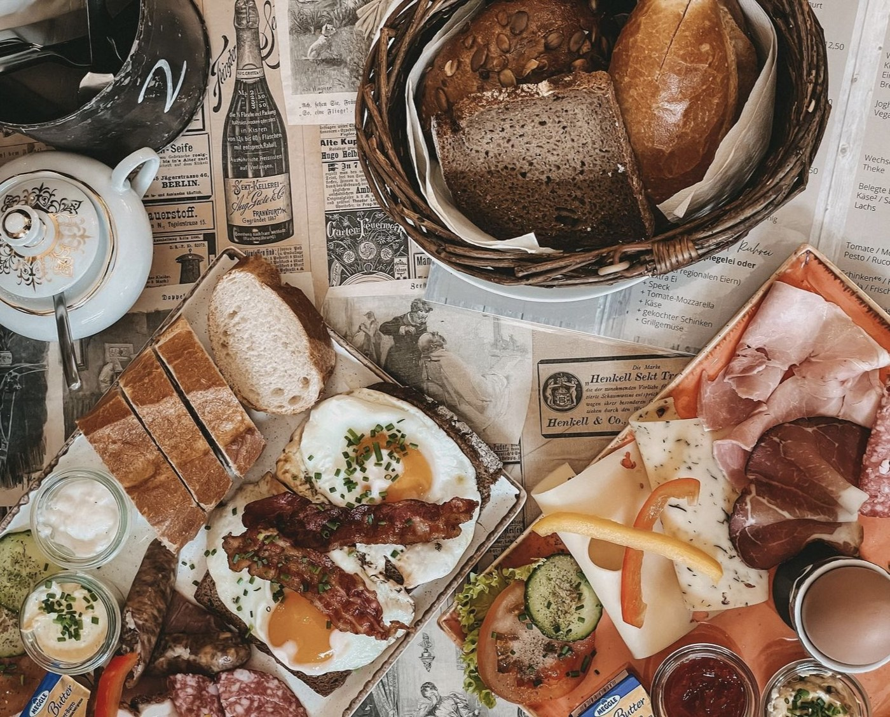
| 営業時間 | 火〜日 9:00〜17:00（料理L.O. 16:30。祝日も9:00〜17:00） |
|---|---|
| 定休日 | 月曜 |
| 住所 | Galgengasse 33, 91541 Rothenburg ob der Tauber |
| 予約 | 朝食のみ電話で可（2時間制）。午後は予約不可で来店順 — ☎ +49 9861 8755978 ／ 公式サイト |
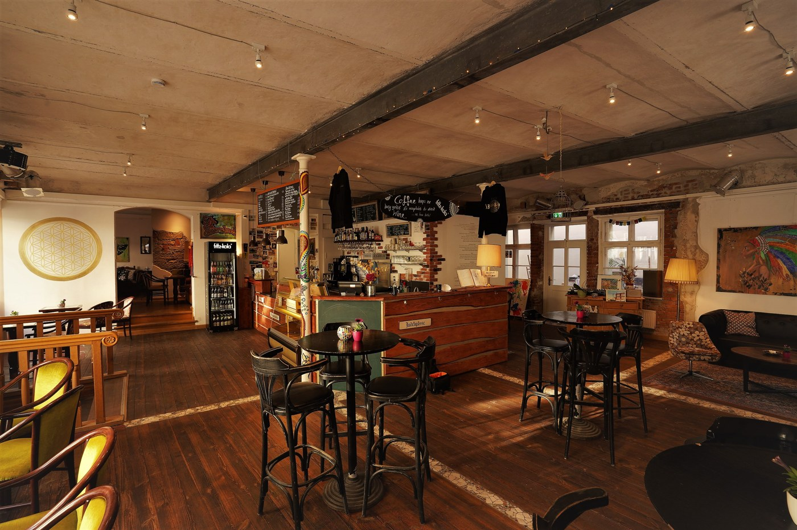
| 営業時間 | 木〜日 9:00〜17:30（夜は催しのある日のみ） |
|---|---|
| 定休日 | 月・火・水 |
| 住所 | Kirchgasse 5, 91541 Rothenburg ob der Tauber |
| 予約 | 可（公式サイトのオンライン席予約・電話） — ☎ +49 9861 9179478 ／ 公式サイト |
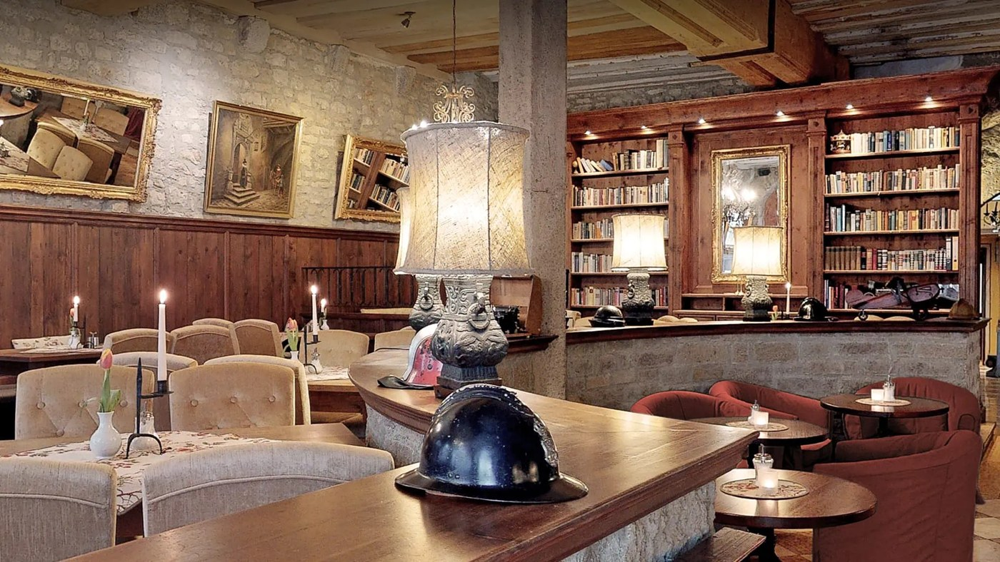
| 営業時間 | 未確認（公式サイトにカフェの営業時間の記載なし） |
|---|---|
| 定休日 | 未確認 |
| 住所 | Herrngasse 13, 91541 Rothenburg ob der Tauber |
| 予約 | 不明（記載なし。ホテルへ電話で問い合わせ可） — ☎ +49 9861 2020 ／ 公式サイト |
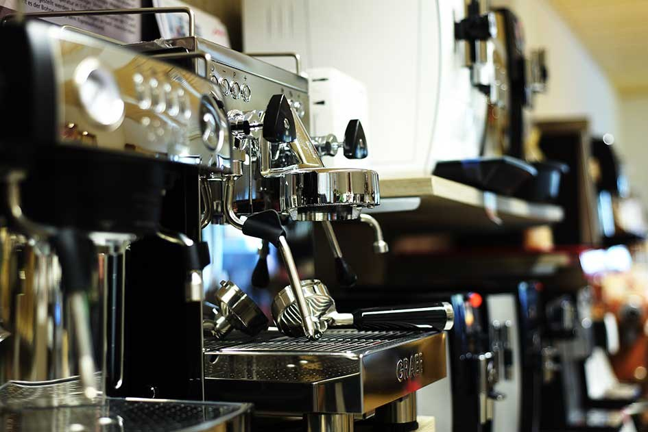
| 営業時間 | 月・木・金 10:00〜18:00／土 10:00〜14:00／日 13:00〜17:00（日曜は催しによる） |
|---|---|
| 定休日 | 火・水 |
| 住所 | Galgengasse 12, 91541 Rothenburg ob der Tauber |
| 予約 | 不要（試飲会は電話で予約） — ☎ +49 178 6262052 ／ 公式サイト |
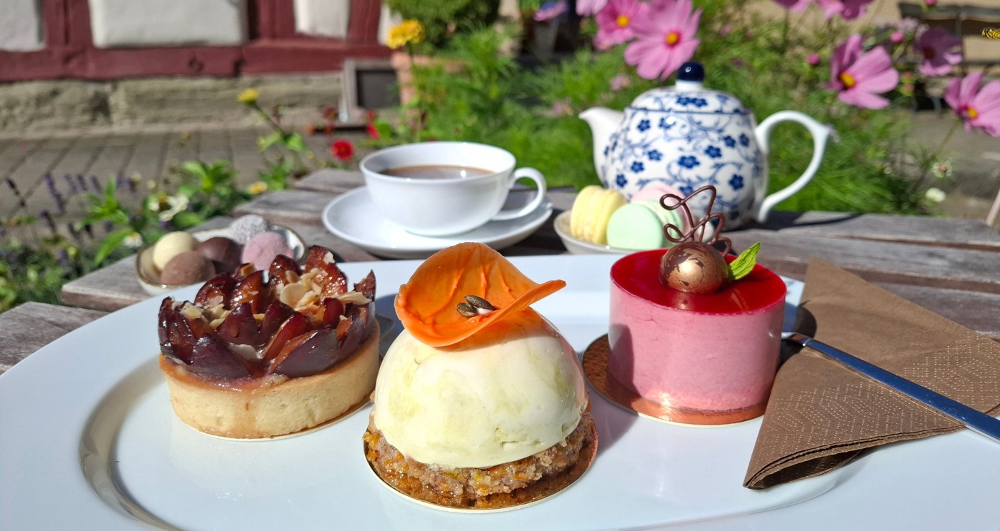
| 営業時間 | 水〜金 14:00〜18:00／土 13:00〜18:00／日・祝 12:00〜18:00（テルトヒェンは金〜日） |
|---|---|
| 定休日 | 月・火。2027年1月〜2月は休業（公式チラシ） |
| 住所 | Plönlein 3, 91541 Rothenburg ob der Tauber |
| 予約 | 不要（ホールケーキは3日前までに電話かメールで注文） — ☎ +49 9861 9764337 ／ 公式サイト |
本ガイドは個人利用目的で作成。掲載情報は2026年10月時点の調査に基づく。写真出典: 各店の公式サイト・公式SNS、および観光局・地域情報サイト等の掲載写真（著作権は各サイト・各撮影者に帰属）。引用元は店ごとにカード内へ明記。